Scanning in greyscale and color isn’t just useful to save the graphics with sufficient quality. In some instances, it’s also useful or necessary to obtain good OCR results! Some documents are difficult or downright impossible to recognize when scanned in black-and-white. In the “bilevel” mode, every pixel in the image is either white or black. When the text is printed on a colored background, the scanner doesn’t always see the difference.
None of this is a problem when the foreground and background are sufficiently different: black text on a light blue, light green or light whatever background obviously poses no problem. The background falls through, the foreground is picked up. We get a sharp text.
But what happens when the foreground and background are closer together in intensity? In most cases, you can adjust the brightness to solve this problem: you modify the brightness to the point where the background gets ignored while the text gets detected.
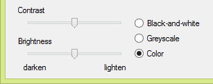
Still, there are documents where that trick doesn’t work. Think for instance of black text printed on a dark background: when scanning such a document in black-and-white, you may not be able to “drop” the background color without losing the text information as well, as much as you may try to adjust the scanner’s brightness. You can’t filter out the background without simultaneously erasing or making too light the text. And when you do pick up the text, the background introduces “noise” that bothers the recognition or simply renders it impossible.
Scanning in color (or greyscale) may create the tone differences that are lacking in bitonal images: when an image has color (or grey scales), there’s mostly some difference in intensity that can be detected. And you don’t have to adjust the brightness, so there’s no risk that the text becomes too light (resulting in broken characters etc.).
That’s why it takes highly intelligent binarization routines to convert some color and greyscale images into black-and-white images successfully: even the tough cases get solved! Given the “difficult” color image above, here’s the (binarized) image that gets submitted to the OCR engine. The background was efficiently filtered out — even if its intensity varied — and the text is crisp and clear.
If you’re under the impression that this challenge is limited to a small number of cases, think again! Intelligent binarization is needed to cope with (very) light text on a white background, with dark text printed on a equally dark background, with colored text printed on a background of the same color, with varying and degrading backgrounds, with “bleedthrough” in newspapers and directories (where the other side of the page shows through), with computer printouts of wide-carriage high-speed matrix printers where you’ve got white and green strokes on the paper etc. (OK, you can place a black page on top of your scanned document as back-drop to avoid bleedthrough.)
The examples below show that the binarization routines even handle changes — gradual and other — in the background! To cope with varying colors and varying color intensity in images, the binarization of state-of-the-art OCR software is “adaptive”. The software chooses the optimal black-and-white threshold locally: a different threshold can apply to each small region of the image.
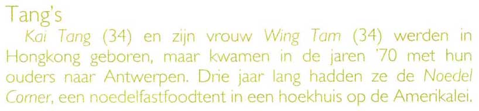
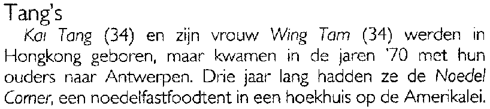
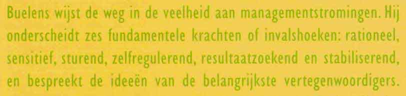
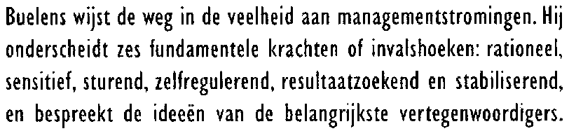
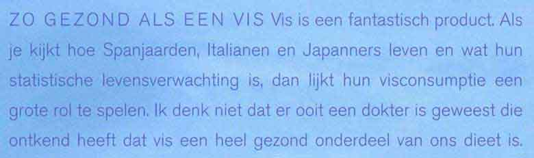
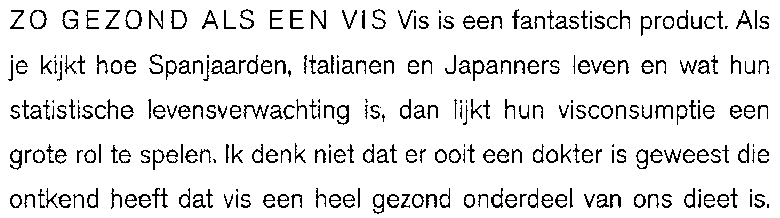
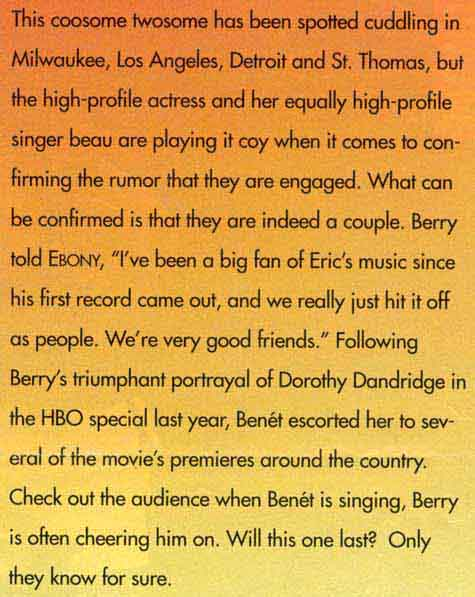 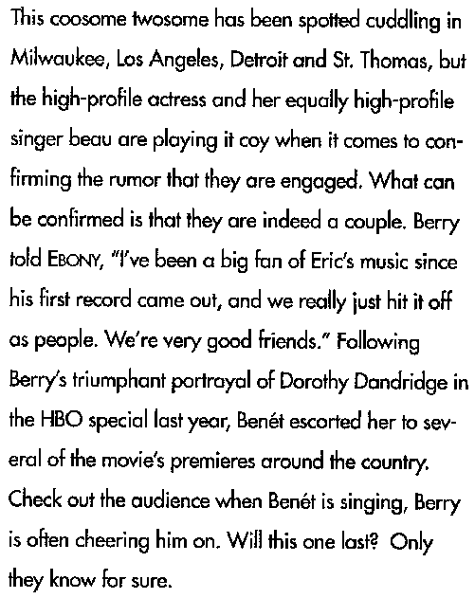
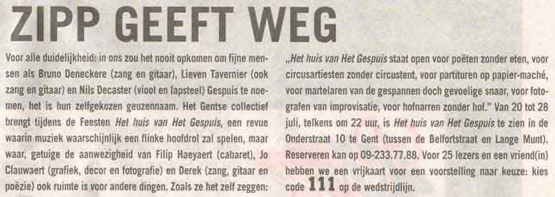
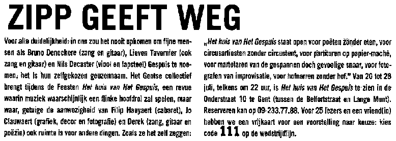
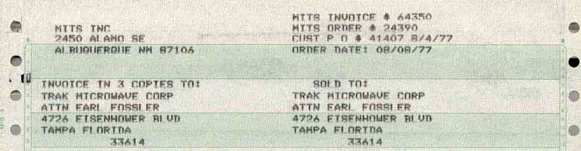
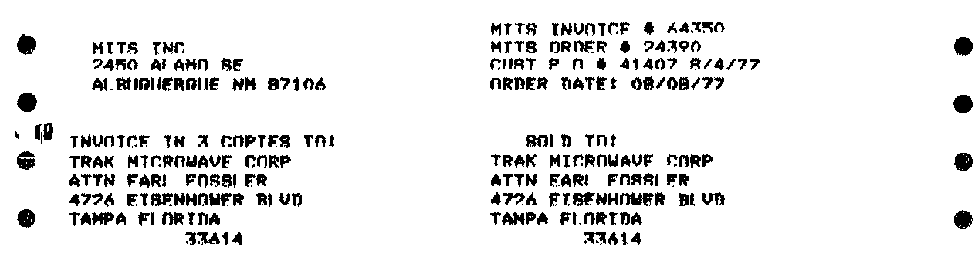
Local, adaptive binarization even works on the small strokes generated by pen scanners!
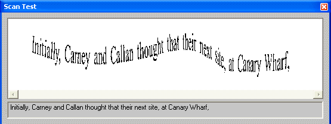
Binarizing images intelligently when this is useful ensures that the OCR of color images works well. And that’s not always the case with OCR packages: some OCR solutions on the market yield disappointing results on color scans. Their recognition accuracy is much lower on color images than it is on black-and-white images. But the leading OCR packages are very sophisticated when it comes to binarization. With such OCR software, you can even influence the binarization manually. By default, the bilevel threshold is fixed automatically (and locally), as we just described.
When scanning (in color), you should set the brightness correctly. But even when the brightness is not perfect, the user can intervene, given the appropriate software. The user can manually change the brightness of the black-and-white image… without rescanning!
How? He can apply a different threshold when necessary by darkening or lightening the black-and-white image: when he darkens the image, more pixels become black in the black-and-white version, when he lightens the image, less pixels become black in the black-and-white version.
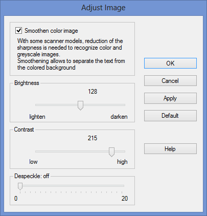
Let’s assume that a yellow text (on a white background) gets dropped from the black-and-white image but you want to recognize it anyway. Darken the image by dragging a simple, straightforward brightness slider bar. In doing so, you actually change the black-and-white threshold until the yellow text shows up in the binarized image.
The reverse also holds: lighten an image where every zone is dark. This time, the default binarization gives you one big black image but as you eliminate the page background, the text becomes legible.
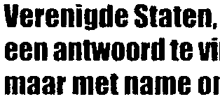
The brightness determines the overall brightness of the image. Any darkening or lightening of the image applies to all pixels. That’s not the case for the contrast. The contrast determines the local contrast between the darker and lighter zones of the image. (The text is usually darker than the background — the reverse is true when you’re dealing with inverted text.)
This time, the objective is to make the character shapes stand out nicely against their colored background.
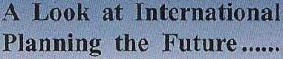
In any case, OCR engines operate on black-and-white images. That means that any scanned image gets binarized if necessary: the OCR software creates a black-and-white version for every greyscale and color image.
To make things even more difficult: binarization doesn’t always suffice! Image smoothening can be mandatory for some images as well. Smoothening color images renders greyscale and color images more homogeneous by “flattening”, smoothing out relative differences in intensity. The color of a pixel is replaced by the average of the surrounding pixels. As a result, you get a better legibility of the foreground — the text — against the background— a spot color, artwork etc.
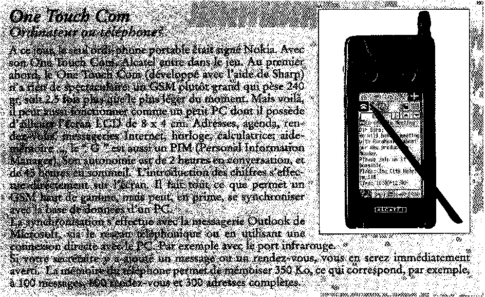
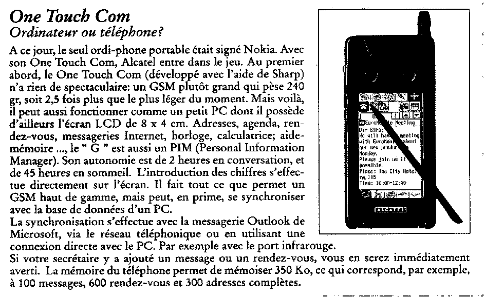
This image processing feature may seem highly technical and difficult to understand, but it certainly has its role to play: with some scanner models, this reduction of the sharpness is needed to recognize color and greyscale images. Smoothening is sometimes the only way to separate text from the colored background! Our sample image is simply illegible without image smoothing because the binarization fails…
Let’s take things step by step, shall we? — Take us where the rainbow ends! — B is for binarize — What gets read and what doesn’t — Lines, lineskew and drop letters — Segmenting words and characters — Stylized fonts — Why is OCR software called omnifont? — What’s the role of linguistics in the OCR process?
Home page — Intro — Scanners — Images — History — OCR — Languages — Accuracy — Output — BCR — Pen scanners — Sitemap — Search — Feedback – Contact